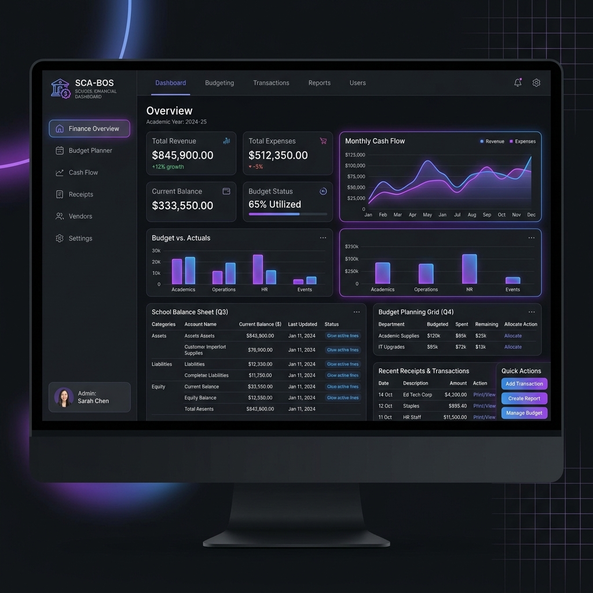
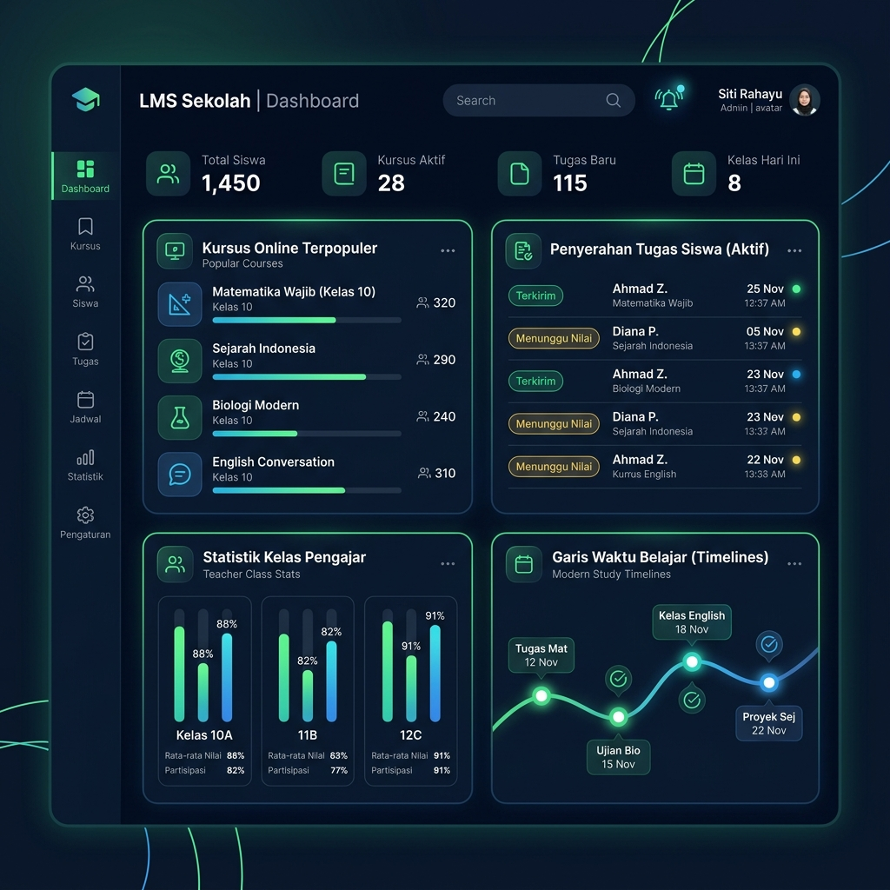
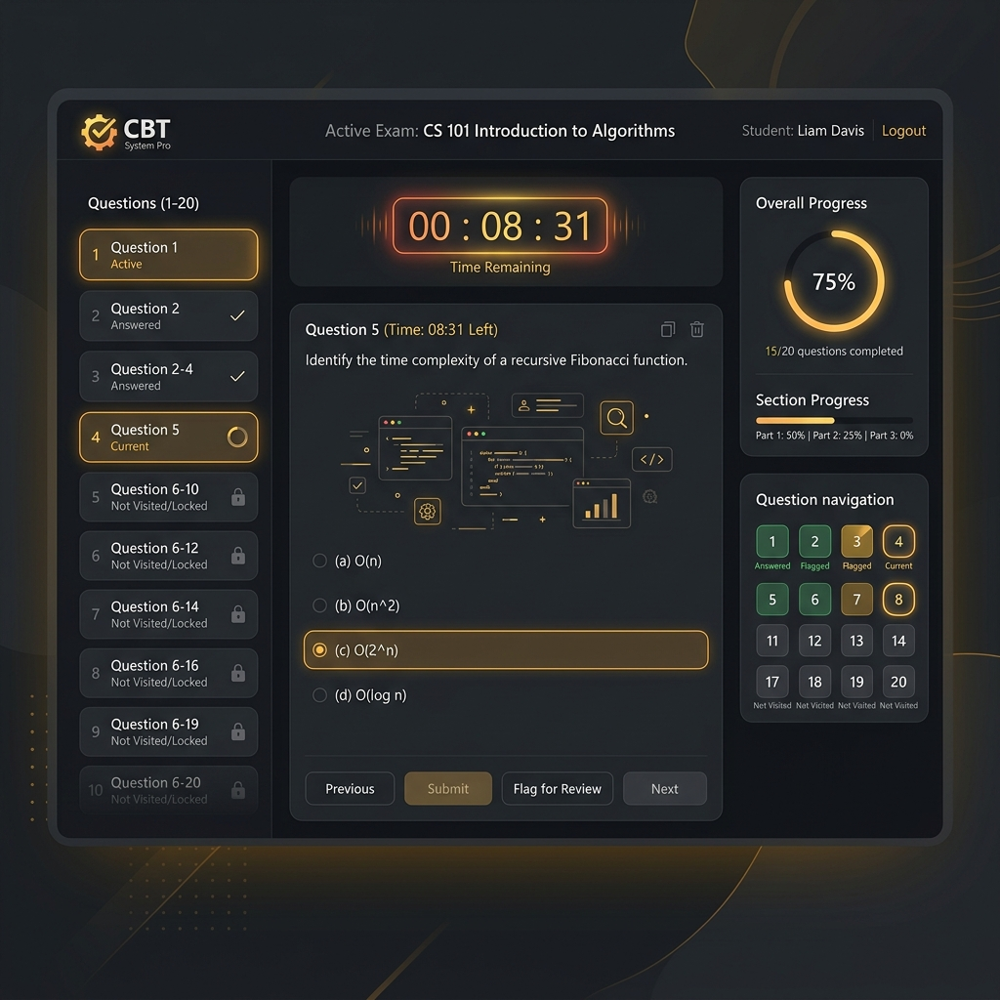

SCA-BOS-GAS
Sistem Cetak Administrasi BOS sekolah terintegrasi Spreadsheet. Mempermudah perencanaan anggaran, pencatatan transaksi, kuitansi, dan dokumen dinas.
Kumpulan aplikasi web modern, ringan, dan responsif yang terintegrasi secara dinamis dengan Google Sheets dan ekosistem Google Workspace.

Sistem Cetak Administrasi BOS sekolah terintegrasi Spreadsheet. Mempermudah perencanaan anggaran, pencatatan transaksi, kuitansi, dan dokumen dinas.

Learning Management System digital sekolah yang modern, cepat, dan reaktif. Pengelolaan tugas, evaluasi, dan materi belajar terpusat di Google Sheets.

Aplikasi Computer Based Test tangguh dengan integrasi Android Exambrowser, AI Question Generator, import massal Excel, dan otomasi multi-deploy.
Gunakan Google clasp untuk mengelola file skrip lokal. Jalankan npm install -g @google/clasp di terminal Anda.
Hubungkan terminal Anda dengan akun Google Workspace yang memiliki akses ke Apps Script dengan perintah clasp login.
Gunakan file deploy bawaan (seperti deploy.js atau multi-deploy.js) untuk membagikan kode ke skrip target.